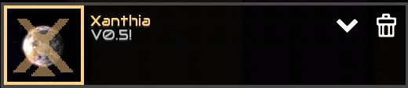

Описание
Первый мой мод в котором вы с помощю межпланетного ускорителя попадаете на планету Селестис.
Вы должным отомстить красным и захватить их планету.Вас будут ждать новые руды,враги,механики и ЛОООООР.
Сложность мода высокая так что запасайтесь терпением информации о выпуске нету.
Что добавляет мод?
- Руды
- Кобальт
Один из немногих материалов который не поддался корозии.
- Кобраниум
Сплав кобальта и вибраниума, сплав имеет характеристики собраных
в себе материалов.
- Имплозит
Смесь вибраниума и ауралита, очень взрывоопасный.
- Вибраниум
Не поддается коррозии, а также излучает вибрации.
- Жидкости
- Ауралит
Жидкость очень похожая на шлак но с невевроятно
большой температурой.
- Радиоактивные отходы
Странная жидкость, которая имеет разум, нужно быть
с ней очень осторожным.
- - Коррозия
9 урона / сек
- Фабрики юнитов
- Фабрика энергетических юнитов
Создает юнита "Кобракс".
- Реконструктор танков
Создает из "Кобракса" юнита "Лансер".
- Юниты
- Кобракс
Юнит стреляющий молниями из рук и энергетическим
лучем из ядра.
- Дельта
Юнит из кобальта, не ржавеет!
- Лансер
Большая громадина стреляющая большим лазером
который сжигает все на своем пути, и имеет
энергетический щит.
- Фантом
Летающий безпилотник нацелен только на ядро,
в больших количествах может доставить проблем.
- Плазматрон
Юнит стреляющий шаровой молнией которая проходит
сквозь любые постройки.
- Треск
Незавершеная органическая масса, может только взрыватся
при плиближению к ядру.
- Жезл
Невероятно что из отходов может появится новая жизнь,
только для них мы лишь паразиты.
- Буры
- Кобальтовый бур
Позволяет добывать кобальт и вибраниум.
- Кобальтовый насос
Может добывать жидкости из озер и рек.
- Конвейеры
- Кобальтовый Конвейер
Переносит предметы
- Кобальтовый трубопровод
Перемещает жидкости
- Кобальтовый мостовой конвейер
Переносит предметы на большие расстояния.
- Кобальтовый мостовой трубопровод
Переносит жидкости на большие расстояния.
- Кобальтовый перекресток
Переносит предметы через конвейер.
- Кобальтовый жидкостный перекресток
Переносит жидкости через конвейер.
- Кобальтовый маршрутизатор
Распределяет предметы на 3 стороны.
- Кобальтовый жидкостный маршрутизатор
Распределяет жидкости на 3 стороны.
- Стены
- Кобальтовая стена
Не самая прочная стена, но пока нету альтернативы она будет полезна.
Имеет два вида (большая и маленькая стена)
- Кобраниевая стена
имеет повышеную прочность и не пропускает лазеры и молнии
Имеет два вида (большая и маленькая стена)
- Вибраниумная стена
Одна из самых полезных стен из-за своего свойства
не пропускать через себя лазеры и молнии.
Имеет два вида (большая и маленькая стена)
- Кобальтовая стена
Не самая прочная стена, но пока нету альтернативы она будет полезна.
Имеет два вида (большая и маленькая стена)
- Турели
- Дуплет
Пушка сразу стреляющая 2 снарядами,
будет полезна против толпы врагов.
- Рельсотрон
Мощная пушка стреляющая залпом из 2 энергетических снарядов.
- Электричество
- Генератор вибро-энергии
Генератор дающий энергию от вибраций.
- Энергитический узел
Узел передающий энергию.
- Энергитический узел
Узел передающий энергию.
- Регенератор частиц
Восстанавливает здоровье всех построек в его радиусе.
- Другое
- Лигатурная печь
Печь которая плавит вибраниум и кобальт создавая этим кобраниум.
- Мешалка Имплозита
Мешалка которая смешивает вибраниум и ауралит получая из них имплозит.
- Ядро "Интеграл"
Ядро созданое из кобальта, как и все из кобальта имеет имунитет к корозии.
- Новые сектора
1. Пылающий лес
2. Аварийная посадка
3. Аванпост
Требования
Для корректной работы мода требуется:
- Конкретная версия не указана, последняя версия мода 0.5
- Минимум 2 ГБ оперативной памяти
- С улыбкой скачивать мод (без улыбки не скачиваем)
Теги
руды
жидкости
турели
стены
новые-механики
юниты
планеты
буры
фабрики
Как скачать мод?
1. Клкните на кнопку Скачать мод
2. При открытие ссылки нажмите на зелёную кнопку код / code
3. В небольшом окошке нажимаем на кнопку скачать файл / download ZIP
4. Заходим в игру, во вкладке "модификации" нажать на "Импортировать модификацию",
найти только что скачанный файл, нажать на него - начать играть с модом